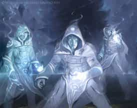
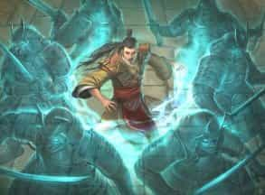

- 3 уровень, вызов
- Время накладывания: 1 действие
- Дистанция: На себя (15-футовый радиус)
- Компоненты: В, С, М (символ веры)
- Длительность: Концентрация, вплоть до 10 минут
- Классы: жрец
- Подклассы: домен войны (жрец), клятва короны (паладин)
Вы вызываете духов, защищающих вас. Пока заклинание активно, они заполняют пространство в пределах 15 футов от вас. Если вы добрый или нейтральный, они могут выглядеть как ангелы или феи (на ваш выбор). Если вы злой, они могут выглядеть исчадиями.
Когда вы накладываете это заклинание, вы можете указать любое количество существ, видимых вами, на которых не будет действовать это заклинание. Скорость остальных существ, попавших под действие заклинания в этой области уменьшена вдвое, и когда такое существо впервые за ход оказывается в области или начинает там ход, оно должно совершить спасбросок Мудрости. При провале существо получает 3к8 урона излучением (если вы добрый или нейтральный) или 3к8 урона некротической энергией (если вы злой). При успехе существо получает половину урона.
На больших уровнях. Если вы накладываете это заклинание, используя ячейку 4-го уровня или выше, урон увеличивается на 1к8 за каждый уровень ячейки выше третьего.
Духовные стражи — Заклинания
Духовные стражи [Spirit guardians]PH14 PH24
Галерея


Комментарии
С другой стороны, если противник стартует в 5 футах от вас и тратит 15 футов движения, чтобы покинуть область, его скорость восстанавливается до нормальной, потратив всего 15 футов передвижени, а не 30 футов, как если бы противник шел по труднопроходимой местности.
Таким образом противникам сложнее до вас добраться, но легче уйти, если сравнивать эффект заклинания с труднопроходимой местностью. Кроме того, снижение скорости работает в сочетании с труднопроходимой местностью, делая практически невозможным для противников ближнего боя добраться до вас и вашей группы.
При входе в область действия максимальная скорость уменьшается вдвое, означает что и кол-во оставшихся очков движения уменьшается вдвое, а не отрезается. Это механически, но и логически будет тоже самое, представим у вас есть 6 секунд, сперва вы двигаетесь без помех 3 секунды, потом вам например дают груз замедляющий вашу скорость вдвое, вы не остановитесь из-за того что уже 3 секунды бежали, а продолжите движение с вдвое меньшей скоростью. Тоже самое и при выходе из области. А так как математику с изменением скорости и делением ее на 2, можно вместо этого заменить на умножение стоимости передвижения на 2, то мы и получим труднопроходимую местность.
Скорость rules as written описывается следующим образом: "У всех персонажей и чудовищ есть скорость, которая измеряется в футах и показывает, как далеко персонаж или чудовище могут переместиться за 1 раунд. Это число предполагает ускоренное перемещение в угрожающих жизни обстоятельствах."
В случае Духовных стражей эффект заклинания описывается следующим образом: "Скорость остальных существ, попавших под действие заклинания в этой области уменьшена вдвое".
Таким образом, пока персонаж находится в этой области, его скорость снижается вдвое. Если персонаж обычно имеет скорость 30 футов и начинает движение в этой области, его скорость в этой области составляет 15 футов. То же самое справедливо и для существа, которое начинает свой ход за пределами области, но перемещается в эту область. Находясь в этой области, его скорость тоже снижается вдвое.
Дальше духовные стражи снижают скорость вдвое вместо создания труднопроходимой местности, и это в большей степени похоже на заклинание замедление, которое тоже уменьшает скорость вдвое.
Т.е. если противник поскользнулся на луже от заклинания Жир, и он находится в зоне действия духовных стражей, то за каждые 5 футов перемещения ему нужно потратить (5+5+5)*2 перемещения. Т.е 30 футов на одну клетку. Если сверху докинуть замедление то 60 футов для перемещения на одну клетку. т.к. эти разные заклинания могут стакаться.
Тут, как раз и прикол закла в том, чтобы заталкивать в пространство на разных ходах и таким образом увеличивать урон.
Уважаемые знатоки, у меня очень много вопросов по этому спеллу. Не смотря на свой опыт в пятой редакции и понимания системы в целом, вординг конкретно этого спелла вызывает у меня множество вопросов. Не буду томить, приведу ситуации и свою интерпретацию к ним, соответственно.
Итак, у нас есть заклинатель, что наложил на себя этот спелл. Если следовать вордингу, то у нас получается следующее:
1. Заклинатель в свой ход подходит к враждебному существу. Существо получает урон, потому что "оказывается" в ауре. Затем следует ход существа. Оно снова получает урон, потому что "начинает там ход". Итого: два прока за раунд.
2. Существо в свой ход подходит к заклинателю. Получает урон, потому что "оказывается" в ауре. Затем начинается ход заклинателя. Существо получает урон, потому что "оказывается" в области. Итого: снова два прока.
Согласно вордингу: "Когда такое существо впервые за ход оказывается в области или начинает там ход, оно должно совершить спасбросок Мудрости", - существо может получать урон за КАЖДЫЙ ход ДРУГОГО существа, потому что здесь не присутствует словосочетания "свой ход", что означает, что оно, в теории, может получить урон два раза за раунд, если битва идёт один на один.
Если же у нас, представим, один заклинатель, один противник и один союзник, то у нас может возникнуть ещё и такая ситуация:
3. Заклинатель в свой ход подходит к существу. Существо получает урон. Начинается ход существа, оно снова получает урон, использует "Отход" и выходит из зоны. Начинается ход союзника, союзник заталкивает существо обратно в ауру. Существо снова получает урон. Итого: три прока за раунд.
В поисках истины я даже решил обратиться к BG3, дабы посмотреть, как реализовано это заклинание там. Но там оно работает вообще по-другому, и в ситуации №1 прок произошёл только в момент, когда заклинатель подошёл к существу, и уже второй прок сработал в следующем рануде, на момент начала хода заклинателя. На момент начала хода существ, уже находящихся в ауре, проков не было, что нарушает весь вординг, поэтому этот вариант точно отпадает.
Подытоживая: даже обращаясь к английскому вордингу, меня очень смущает слово "enters". С одной стороны, это означает "входит", и, собственно, обращаясь к книге игрока, там именно "входит". И если мы берём за основу вординга именно "входит", как и было интерпетировано в PHB, то у нас получается следующая картина:
1. В ситуации №1 срабатывает только один прок, на момент начала хода существа.
2. В ситуации №2 срабатывает только один прок, на момент, когда существо "входит" в ауру.
3. В ситуации №3 срабатывает два прока, в момент начала хода существа и в момент, когда союзник затакливает существо обратно в ауру.
На мой взгляд - именно эта картина выглядит наиболее адекватно.
В общем, жду ваших комментариев и справедливых замечаний.
Кароче 9/10 для меня. Выручало почти в каждой сложной ситуации
Ответ на оба вопроса — нет.
Вот некоторое уточнение ответа.
Некоторые заклинания и другие умения игры создают область эффекта, который что-то делает, когда существо входит в эту область впервые за ход или когда существо начинает свой ход в этой области. В ход применения заклинания вы, прежде всего, ставите ловушку для своих врагов на следующие ходы. Лунный луч [moonbeam], например, создаёт луч света, который может нанести урон существу, входящему в этот луч или начинающему свой ход в нём.
Вот некоторые заклинания, работающие по тому же принципу в их области воздействия, как и лунный луч:
Стена клинков [blade barrier]
Запрет [forbiddance]
Облако смерти [cloudkill]
Лунный луч [moonbeam]
Облако кинжалов [cloud of daggers]
Метель [sleet storm]
Эвардовы чёрные щупальца [Evard’s black tentacles]
Духовные стражи [spirit guardians]
Читая описание любого из этих заклинаний, вы могли бы задаться вопросом, считается ли, что существо входит в область воздействия заклинания, если область создаётся в пространстве существа. И если область воздействия можно переместить — поскольку луч лунного луча можно — при перемещении её в пространство существа считается, что существо входит в область? Замысел разработчиков для подобных заклинаний таков: существо входит в область воздействия, когда оно проходит через неё. Создание области воздействия на существо или перемещение её на существо не засчитываются. Если существо всё ещё находится в области воздействия в начале его хода, оно подвергается эффекту области.
Вход в такую область воздействия не обязан быть добровольным, если в заклинании не сказано иначе. Вы можете, поэтому, отшвырнуть существо в область заклинания вроде волны грома [thunderwave]. Это умный ход, а не использование дыры в правилах, поэтому швыряйте смело! Помните, однако, что существо подвергается эффекту области воздействия только когда впервые за ход входит в эту область. Вы не можете перемещать существо в область воздействия и из неё, чтобы наносить ему урон снова и снова в тот же самый ход.
Таким образом, заклинание вроде лунного луча затрагивает существо, когда оно проходит через область воздействия заклинания и когда начинает свой ход в ней. Вы в сущности создаёте опасность на поле битвы."
Вывод: толчок считается, пока мы говорим про существо, а не зону. Вход не обязательно должен осуществляться путем траты перемещения или телепортации от самого существа. Толчок - тоже вход в зону, пусть и совершенный не самим существом.
(я про первый арт)
2. Как мы можем понять, стражи находятся на земле, так что даже логически (и механически), да, летающие существа урона не получают и не задеваются этим заклинанием.
Всё выше сказанное - моё мнение. Могу быть неправ.